The slide of the lecture is on the left, the same figure or table on the right, computed in the browser from the same data. The ▶ button moves the parameter step by step; the tables and worked examples are recomputed with it. Abbreviations: CC (close-to-close), P (Parkinson), GK (Garman–Klass), RS (Rogers–Satchell), YZ (Yang–Zhang), OHLC (open, high, low, close), EWMA (exponentially weighted moving average), RV (realised variance), ACF (autocorrelation function), ARCH-LM (Lagrange multiplier test for ARCH effects), GARCH (generalised autoregressive conditional heteroskedasticity), VIX (Cboe volatility index), MSE (mean squared error), QLIKE (quasi-likelihood), MZ (Mincer–Zarnowitz), DM (Diebold–Mariano).
What Is Volatility? · Historical Volatility and the Choice of the Window · EWMA and RiskMetrics · Range-Based Estimators · Realised Volatility · Volatility Clustering · Long-Run Behaviour, the VIX and the Leverage Effect · Evaluating Volatility Forecasts
What Is Volatility?
Four Markets, One Pattern
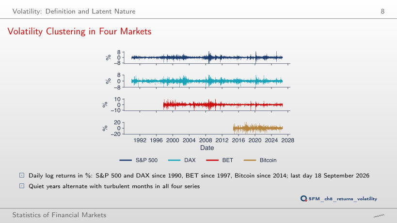
Answer
30 days, against 0.0053 expected if the returns followed the Normal distribution. The DAX has 20 such days, the BET 31, Bitcoin 8. The largest S&P 500 move (−12.8% on 16 March 2020) is 11.3 standard deviations; for the four markets the values are between 8.9 and 13.3.
Interpretation: Volatility in Four Markets
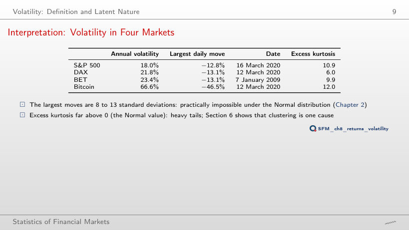
Volatility in four markets
Answer
Bitcoin: 46.5/3.49 = 13.3 standard deviations, against 12.8/1.13 = 11.3 for the S&P 500, 9.5 for the DAX and 8.9 for the BET. Under the Normal distribution, the probability of a move beyond 9 standard deviations is of the order of 10⁻¹⁹: the excess kurtosis (10.9; 6.0; 9.9; 12.0) shows heavy tails in all four markets.
Worked Example: Annualising Volatility
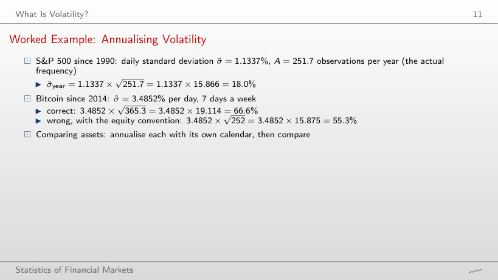
Worked example: annualisation
Answer
Bitcoin falls from 66.6% to 55.3% (−16.9%, the factor √(252/365.3) = 0.831); the S&P 500 stays at 18.0%, the DAX at 21.8%, and the BET moves from 23.4% to 23.5%, because their actual frequencies (251.7; 253.0; 249.9 observations a year) are close to 252. With A = 252, Bitcoin would look one sixth less risky.
Historical Volatility and the Choice of the Window
S&P 500: Three Windows, Three Answers
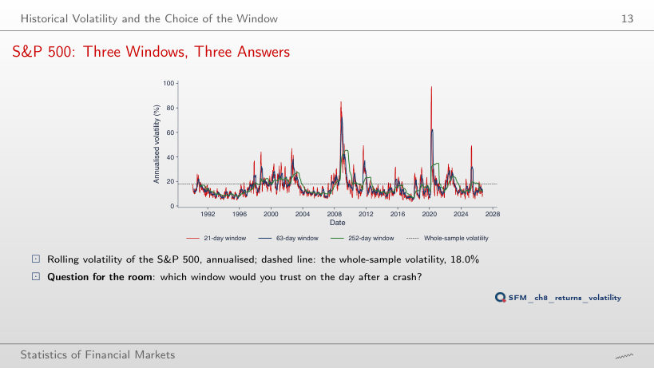
Answer
A short window or EWMA: the mean over a long window still contains the calm days before the crash. The 21-day window rose to 97.5% on 6 April 2020; the 252-day window reached its maximum, 45.6%, only on 15 July 2009, months after the peak of the 2008 crisis. The price of the fast reaction is noise: the typical daily change of ln σ̂ is 6.7% with 21 days and 0.8% with 252 days.
How Precise Is a Sample Volatility?
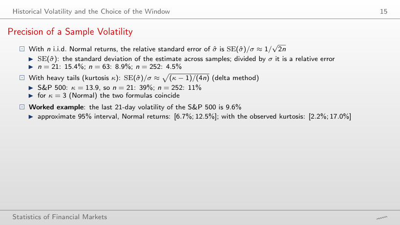
Worked example: the interval for the latest volatility
Answer
39.1%, 2.54 times the 15.4% of the formula for Normal returns (the ratio is √((κ − 1)/2)). For the latest 21-day volatility, 9.6%, the approximate 95% interval is [6.7%; 12.5%] with Normal returns and [2.2%; 17.0%] with the observed kurtosis. Even with n = 252 the relative error is still 11.3%; 4.5% is the value for n = 252 with Normal returns.
EWMA and RiskMetrics
EWMA Weights against a Rolling Window
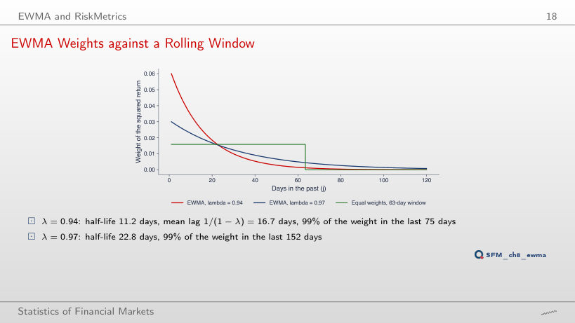
Answer
458.2 days, almost two years of trading: ln 0.01/ln 0.99. The half-life is 69.0 days and the mean lag 100 days. For any λ, the number of days that carry 99% of the weight is 6.64 times the half-life (ln 0.01/ln 0.5).
Worked Example: One EWMA Update
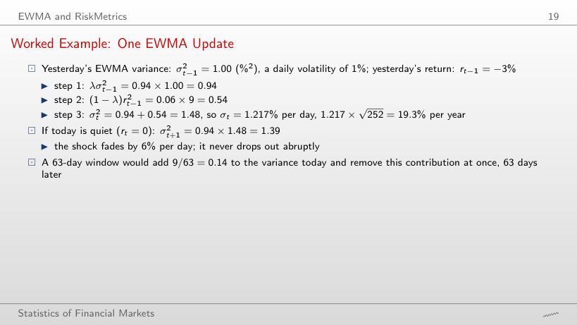
Worked example: one EWMA update
Answer
2.60 = 0.80 × 1 + 0.20 × 9, so σ(t) = 1.61% a day. A smaller λ gives a larger weight (1 − λ = 0.20) to yesterday's shock: the reaction is stronger and the memory shorter (the half-life falls from 11.2 to 3.1 days). The option 1.40 forgets to square the return.
The Ghost Effect: March–June 2020
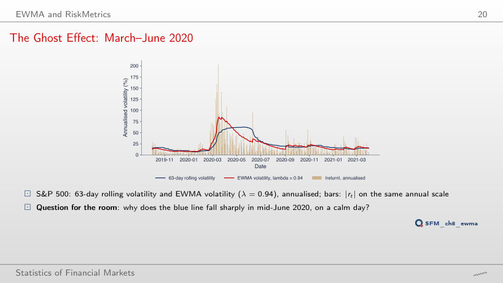
Answer
On 15 June 2020 the return of 16 March 2020 (−12.8%) left the 63-day window: the window volatility fell from 50.4% to 43.0% in a single day, without any news. With a 21-day window the same crash day leaves on 15 April 2020 (from 78.8% to 64.0%), with 126 days on 14 September 2020. The EWMA moved by only −0.9 percentage points that day.
Range-Based Estimators
One Trading Day: What OHLC Records
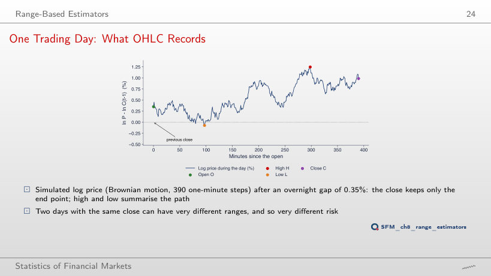
Answer
The return of the day r = o + c rises from 0.985% to 1.635% and r² from 0.970 to 2.672. The high, the low and the close are measured from the open of the day, so Parkinson (0.627), Garman–Klass (0.714) and Rogers–Satchell (0.681) stay the same: the range-based estimators do not see the variance of the night.
The Parkinson Estimator (1980)
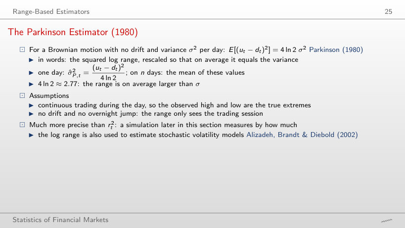
Worked example: Parkinson from H and L, the day with the widest range of the year
Answer
σ̂²_P = 8.421²/2.7726 = 25.57, so σ̂_P = 5.06% a day. The range exceeds σ on average by a factor √(4 ln 2) = 1.67, and dividing by 4 ln 2 corrects exactly for this. The close-to-close return of the day was 8.88%, with r² = 78.87, three times the Parkinson estimate. The option 8.42% is the unscaled range, and 3.04% divides the range by 4 ln 2 without the square root.
Garman–Klass (1980) and Rogers–Satchell (1991)
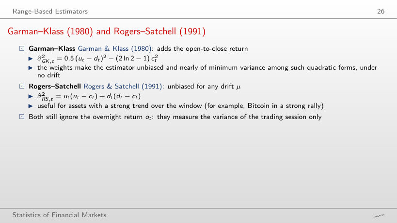
Worked example: Garman–Klass and Rogers–Satchell
Answer
652.5 (%²) = 1.390 × 16.284 + (−33.626) × (−18.732) = 22.6 + 629.9, so σ̂_RS = 25.5% a day. Garman–Klass gives 527.4, Parkinson 442.2. The day had a strong drift (c = −14.9%), and Rogers–Satchell, unbiased for any drift, gives the largest estimate. The option 1,133 = u² + d² leaves out the terms in c.
Yang–Zhang (2000): Adding the Night
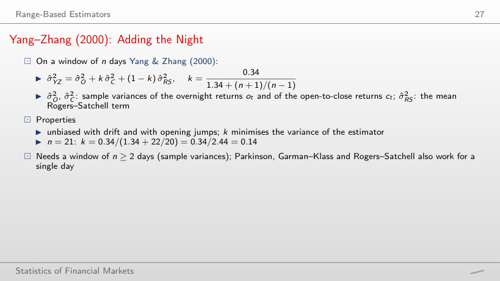
Worked example: the weight k and the Yang–Zhang estimator
Answer
k(126) = 0.34/(1.34 + 127/125) = 0.144, and the limit for large n is 0.34/2.34 = 0.145; for n = 2, k = 0.078. The weight varies little with n: Yang–Zhang is dominated by the night variance σ̂²_O and by the Rogers–Satchell term, with the weight 1 − k ≈ 0.86.
Worked Example: S&P 500 on 16 March 2020
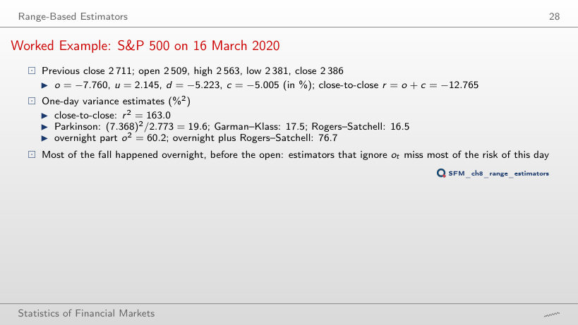
Worked example: one day, six estimates
Answer
o² = 60.2, that is 37% of r². The rest does not split simply, because r² = o² + c² + 2oc: here c = −5.005%, c² = 25.0 and 2oc = 77.7. The estimators that ignore the night (Parkinson 19.6, Garman–Klass 17.5, Rogers–Satchell 16.5) see less than one eighth of r²; overnight plus Rogers–Satchell gives 76.7. The option 61% compares the returns, not their squares (7.760/12.765), and 12% is the ratio Parkinson/r².
Efficiency by Simulation
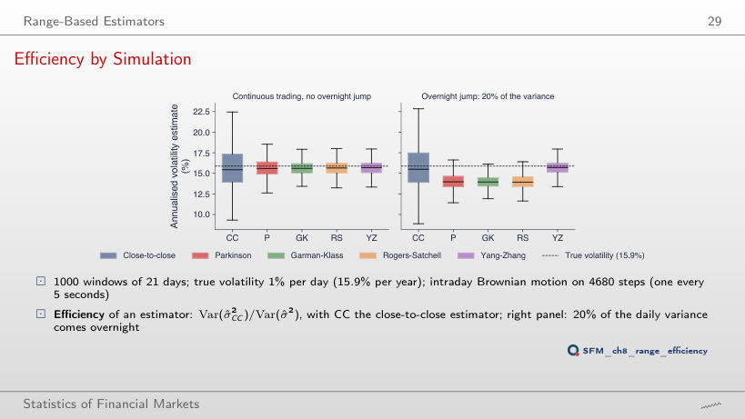
Answer
It stays about the same: 10.3 at n = 5 and 8.0 at n = 63 (extra runs of the simulation). Both variances fall roughly as 1/n, so their ratio changes little: the efficiency gain comes from the information within a day, not from the length of the window. With an overnight jump, the bias of Parkinson, GK and RS stays around −22% for every n.
Interpretation: Precision Is Not Accuracy
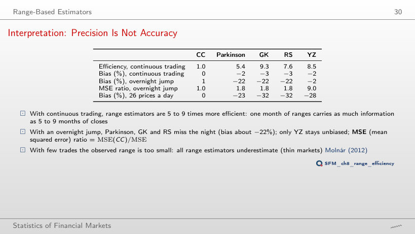
Efficiency, bias and MSE ratio (1,000 windows)
Answer
MSE = variance + bias². With an overnight jump, Parkinson, GK and RS measure only the session and underestimate the variance by about 22%; their mean squared error is dominated by this bias, although their variance is 8.8–13.6 times smaller than that of CC. Yang–Zhang adds σ̂²_O: bias −2% and MSE ratio 9.0.
Real Data: Five Estimators, Five Assets
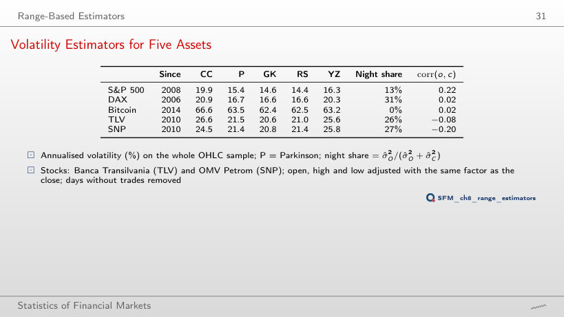
Annualised volatility (%) on the OHLC sample
Answer
Var(r) = Var(o) + Var(c) + 2Cov(o, c), and for the S&P 500 corr(o, c) = 0.22; a likely explanation is the stale prices in the opening value of the index. For the DAX and Bitcoin the correlation is 0.02, and the ratio YZ/CC is 0.97 and 0.95. The night share (13%) is already in YZ, and the S&P 500 has no days with H = L.
S&P 500: Rolling 21-Day Estimates since 2019
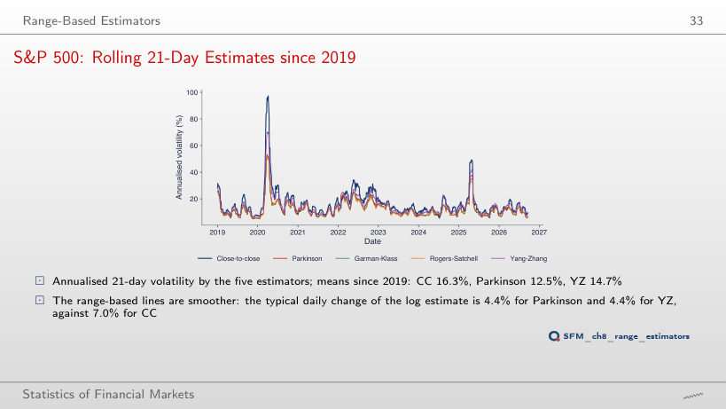
Answer
Both rise sharply: 30.3% for CC, 13.9% for Parkinson and 14.8% for YZ; with 63 days they fall to 2.8% and 2.0%. The advantage of the range-based estimators is larger for short windows: the ratio CC/Parkinson is 2.2 at n = 5, 1.6 at n = 21 and 1.4 at n = 63.
Realised Volatility
Realised Variance from Intraday Returns
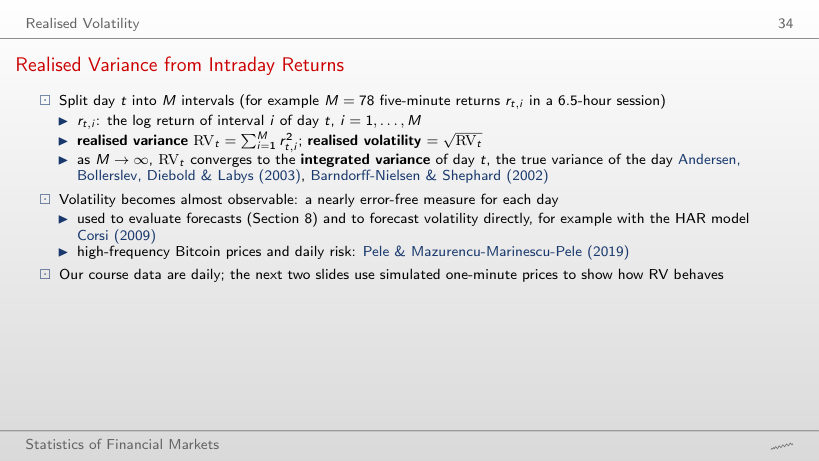
Worked example: the realised variance of one day
Answer
1.051% (390 returns, an error of +5.1%). The simulation has no microstructure noise, so RV converges to the integrated variance as M grows: over the 60 days the mean absolute relative error falls from 5.9% (5 minutes) to 2.9% (one minute). With noise, the signature plot shows the opposite effect at short intervals.
Simulated Example: RV Tracks the True Volatility
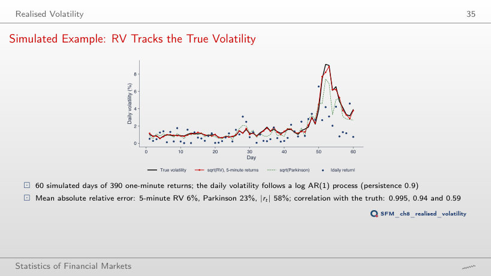
Answer
58%, as for |r|: with M = 1, RV is just r², and the correlation with the true volatility falls to 0.59. At one minute the error is 3%, with a correlation of 0.997. Parkinson (23%) uses only the high and the low and lies between the two extremes.
Microstructure Noise and the Signature Plot
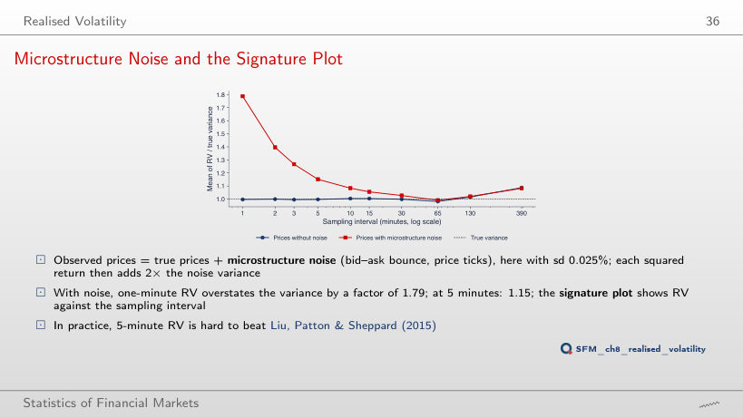
Answer
4.16 times in the simulation and 4.15 times by the formula 1 + 2M × noise variance/true variance, with M = 390: the excess of 0.79 grows with the square of the noise, to about 4 × 0.79 = 3.16. At 5 minutes (M = 78) the ratio is 1.62. Each squared observed return contains, on average, twice the noise variance.
Volatility Clustering
The Sign Is Unpredictable, the Size Is Not
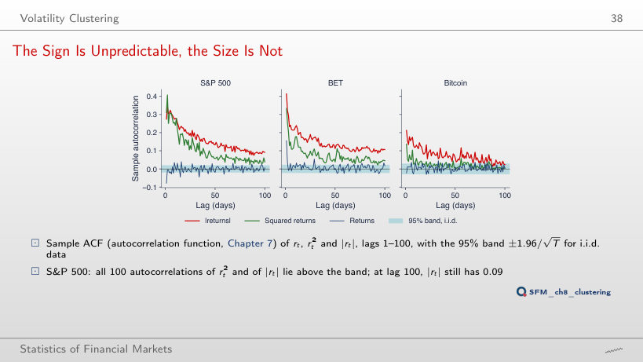
Answer
72 for |r| and 40 for r². The band ±1.96/√T widens from ±0.020 to ±0.030 as T falls from 9,240 to 4,202, and ρ̂₁₀₀(|r|) falls from 0.09 to 0.02. At short lags volatility clustering remains evident; for the BET from 2010, 53 lags of |r| are outside the band.
Interpretation: Clustering in Three Markets
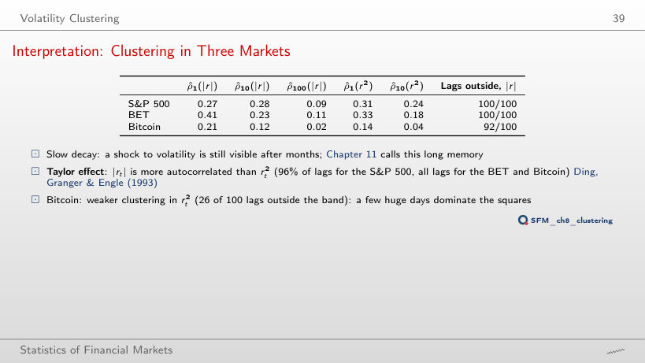
Autocorrelations of |r| and r² (outside the band: of 100 lags)
Answer
d = 1.00 (0.414): |r| is more autocorrelated than r² (0.333), the Taylor effect. The optimum depends on the series and the lag, though: at lag 1, d = 1.75 for the S&P 500 and 0.75 for Bitcoin; at lag 10, 1.25, 0.75 and 0.50. Large powers give a large weight to a few extreme days.
Is Clustering Real? Shuffle the Days
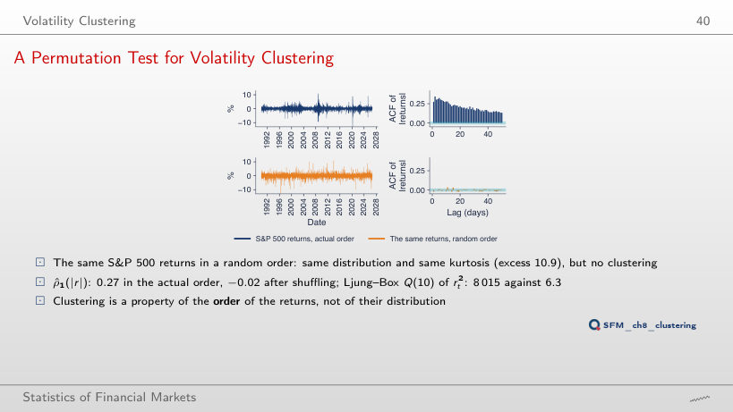
Answer
ρ̂₁(|r|) stays at 0.23, because four of five pairs of consecutive days remain in the same block, but Q(10) of r² falls from 8,015 to 1,413: the lags longer than the block lose their structure. With 63-day blocks, ρ̂₁(|r|) = 0.27 and Q(10) = 7,038. The excess kurtosis stays 10.9 in all cases.
Testing for Clustering: Ljung–Box on Squared Returns
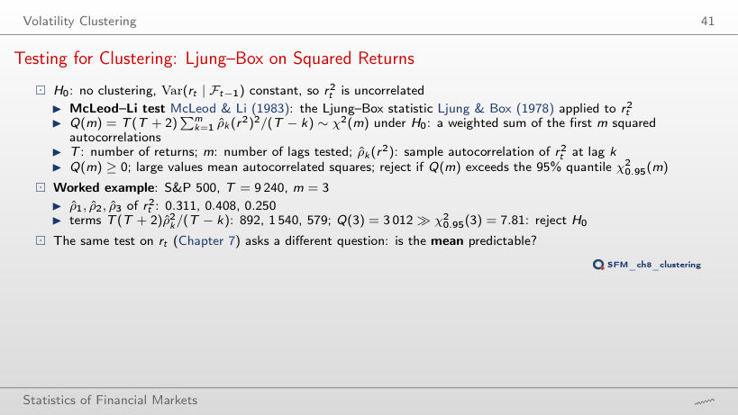
Worked example: the McLeod–Li test
Answer
The terms T(T + 2)ρ̂²/(T − k) are 892; 1,540; 579, so Q(3) = 3,012, far above χ²0.95(3) = 7.81. Q(3) of the returns is 57.7: it rejects too, but it is 52 times smaller. The option 8,958 forgets to square the autocorrelations, and 0.33 forgets the factor T(T + 2)/(T − k).
The ARCH-LM Test (Engle, 1982)
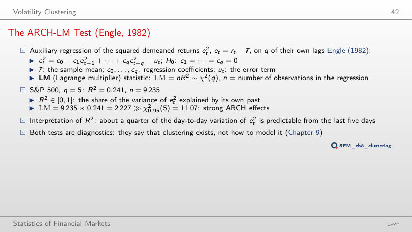
Worked example: the ARCH-LM test
Answer
LM = 9,235 × 0.2412 = 2,227, against χ²0.95(5) = 11.07 (p < 0.001). R² says that about a quarter of the day-to-day variation of e²ₜ is anticipated by the last five days. The option 4,535 uses R instead of R², and 1.21 multiplies R² by q instead of n.
Clustering Tests in Six Series
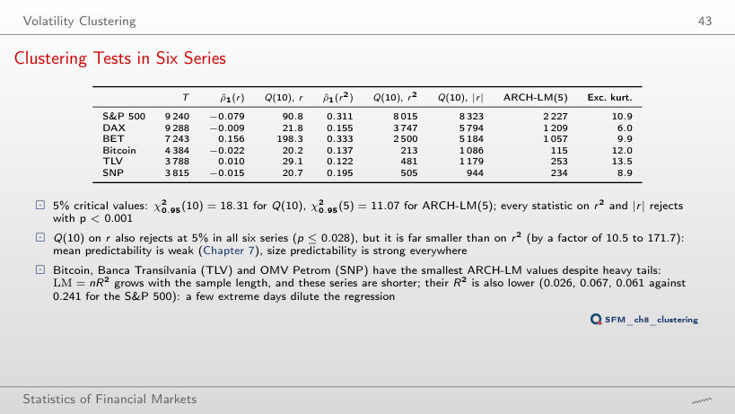
Tests on the daily returns (in red: p-value below 0.05)
Answer
LM = nR²: Bitcoin has less than half the observations of the S&P 500 (4,379 against 9,235 in the regression), and its R² is 0.026 against 0.241, because a few extreme days dominate the regression of squares. The test still rejects strongly (p < 0.001), and Q(10) of |r|, less sensitive to extreme days, is 1,086. Q(10) of r also rejects in all six series (p ≤ 0.028), but it is 10.5–171.7 times smaller than that of r².
Clustering Creates Heavy Tails
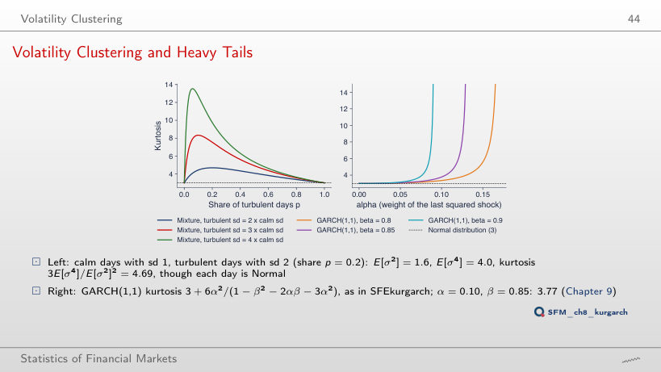
Answer
At p = 0.1, with kurtosis 8.33; at p = 0.5 the kurtosis is 4.92, at p = 0.02, 5.80. As p tends to 0 or 1 the mixture becomes a single Normal distribution, with kurtosis 3. For the ratio 2 and p = 0.2, as on the slide, the kurtosis is 4.69.
Long-Run Behaviour, the VIX and the Leverage Effect
Volatility over Three Decades
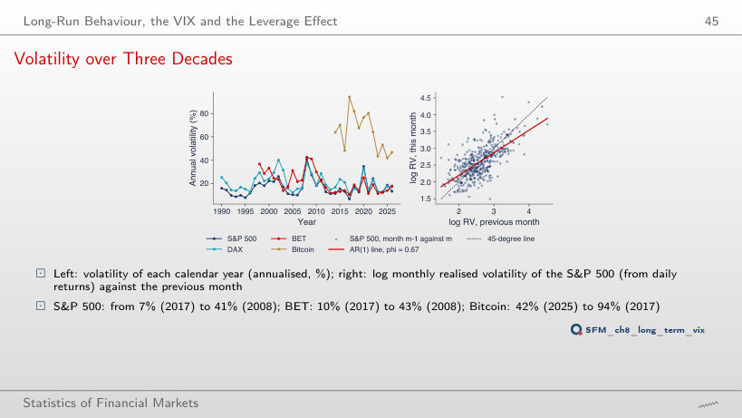
Answer
φ̂ = 0.53 (SE 0.06) on 201 months, a half-life of 1.1 months and a long-run level of 12.9%; from 2000, φ̂ = 0.66. The sample from 2010 does not contain the long 2008–2009 crisis, and the 2020 episode was short, so mean reversion looks faster.
VIX against the Volatility That Followed
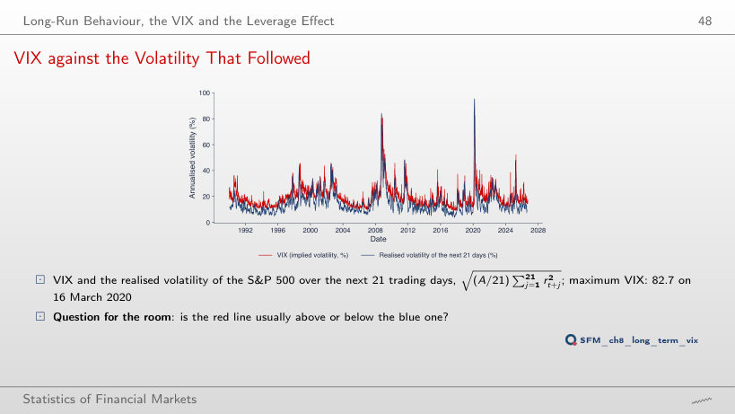
Answer
Above, on 86% of the 9,199 days; the mean VIX is 19.4%, the mean realised volatility 15.3%, a gap of 4.1 points. This is the variance risk premium: investors pay to be insured against volatility jumps. With h = 63 days, the VIX is above on 82% of the days.
Interpretation: Implied against Realised Volatility
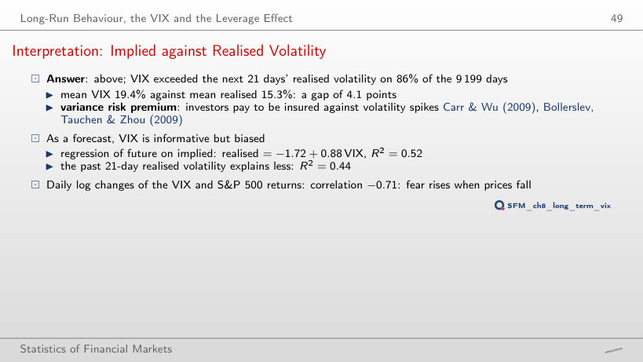
VIX and the realised volatility of the next h days
Answer
Both R² fall, to 0.37 and 0.26, and the VIX stays more informative; the regression becomes realised = −0.16 + 0.81 VIX. After 2010 there are fewer long episodes of high volatility, so less variation to explain. The slope below 1 shows that the VIX is informative but biased as a forecast.
Bad News Raises Future Volatility
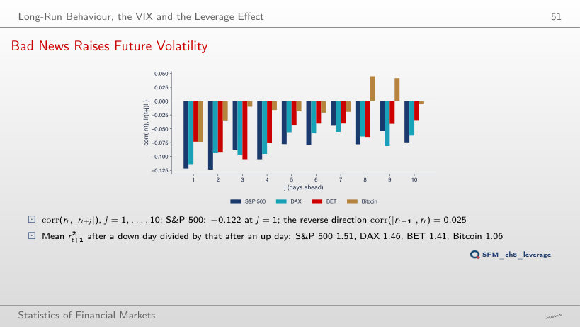
Answer
The effect becomes stronger: the correlation is −0.141, and the ratio of the mean of r²ₜ₊₁ after a down day to that after an up day rises from 1.41 to 1.86. For the S&P 500 the correlation stays at −0.122. Bitcoin has the weakest asymmetry (ratio 1.06).
Nonparametric Volatility Given Yesterday's Return
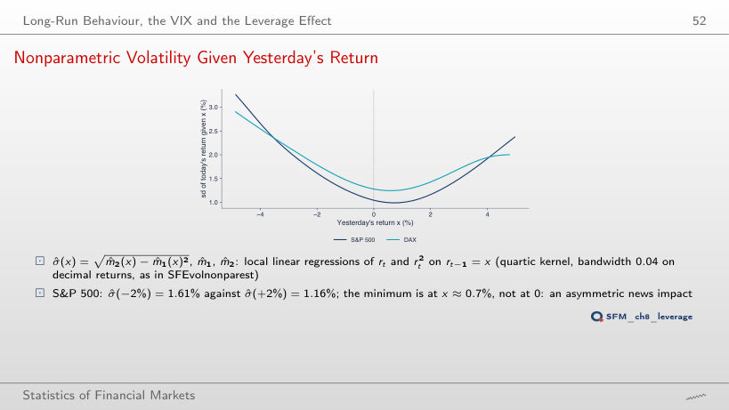
Answer
Because of the asymmetry: a moderate up day is followed, on average, by the calmest day, and a fall of the same size by a more turbulent one; σ̂(−2%) = 1.61% against σ̂(+2%) = 1.16% (ratio 1.39), for the DAX 1.79% against 1.43%. The mean return, 0.03% a day, is too small to explain the shift. With h = 0.01 the minimum moves to 0.17%, with h = 0.10 to 1.61%, but σ̂(−2%) > σ̂(+2%) remains.
Evaluating Volatility Forecasts
Loss Functions: MSE and QLIKE
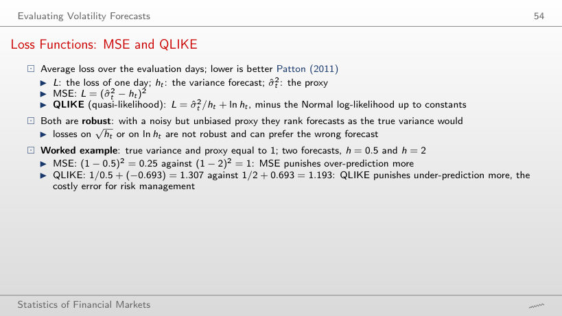
Worked example: MSE and QLIKE
Answer
MSE prefers h = 0.5 (0.25 against 1), QLIKE prefers h = 2 (1.193 against 1.307): MSE penalises overestimation more, QLIKE underestimation, the costly error in risk management. QLIKE has its minimum at h = proxy. MSE becomes indifferent between the two forecasts at proxy = 1.25, QLIKE at proxy = 2 ln 2/1.5 = 0.924.
S&P 500: Which Forecast Is Best?
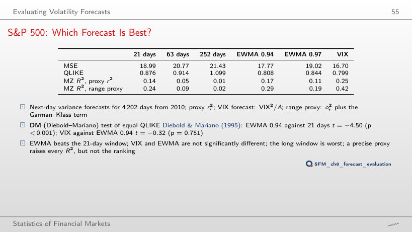
Next-day variance forecasts (in green: the smallest loss)
Answer
The VIX (0.799), followed by EWMA 0.94 (0.808), but the difference is not significant: the DM test gives t = −0.32 (p = 0.751). EWMA 0.94 is significantly better than the 21-day window (t = −4.50, p < 0.001), and the 252-day window is the weakest (1.099). With the range proxy the VIX drops to fifth place (0.635): this proxy is on average smaller than r² (0.82 against 1.18), because it does not see Cov(o, c), and the VIX, which already exceeds the realised volatility, loses most.
Forecasts in 2020
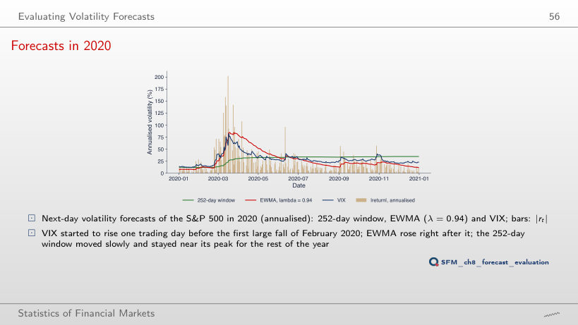
Answer
EWMA 79.0% on 29 October, VIX 80.9% on 21 November, the 252-day window 41.1% on 31 December. The long window accumulates the shocks and falls only when they leave it, so its peak comes late and is lower. Mean QLIKE in 2008: 3.132 for the 252-day window, 2.420 for the EWMA, 2.350 for the VIX.
Choosing λ by QLIKE
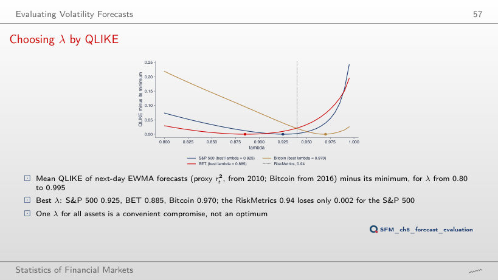
Answer
0.940, the RiskMetrics value (the QLIKE difference at 0.94 is below 0.001); from 2020, 0.920; from 2016, 0.930. For the BET the best λ is between 0.885 and 0.900, for Bitcoin between 0.970 and 0.995. A single λ for all assets and periods is a convenient compromise, not an optimum.
Daily log returns, in %: S&P 500 and DAX from January 1990, BET from September 1997, Bitcoin from September 2014 (7 days a week), Banca Transilvania (TLV) and OMV Petrom (SNP) from 2010, from the adjusted price, to 18 September 2026; the two erroneous TLV days of May 2016 are removed. OHLC prices: S&P 500 from 2008, DAX from 2006, Bitcoin from 2014, TLV and SNP from 2010 (stocks adjusted with the factor of the close). VIX: daily closes on the S&P 500 calendar. EODHD prices. The simulated OHLC day, the efficiency simulation (1,000 windows), the simulated one-minute prices and the shuffle of the returns are those of the lecture (the same code and the same generator seed); the volatilities, the range-based estimators, the autocorrelations, the Ljung–Box and ARCH-LM tests, the annual and monthly volatilities, the VIX comparison, the leverage correlations, the nonparametric curves and the forecast losses are recomputed in the browser from the same data. Other seeds, other windows of the simulation, other noise levels, the block shuffle, other sample starts, horizons, lags and bandwidths are extra runs of the same code.